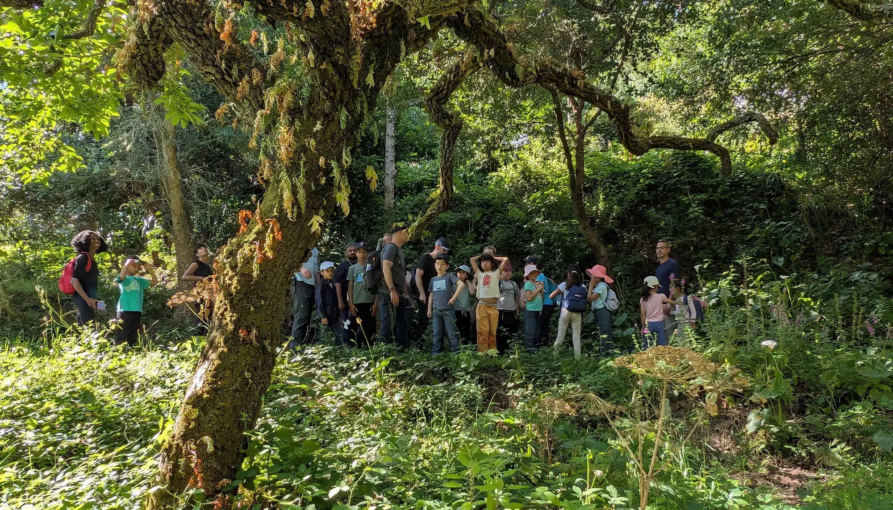
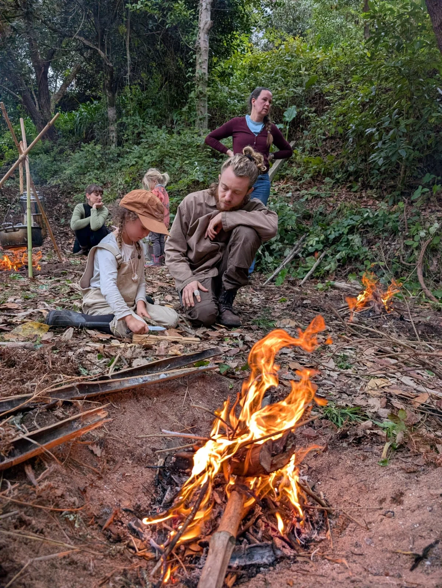
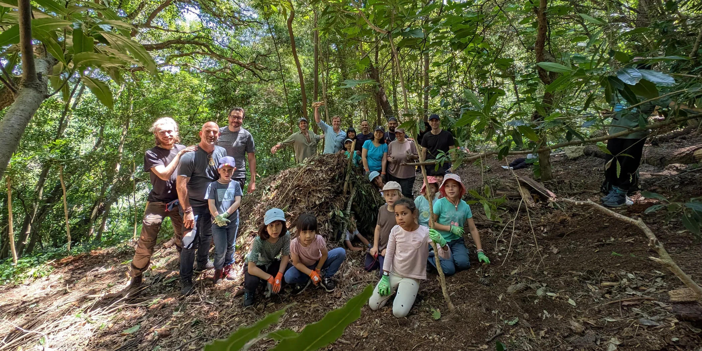
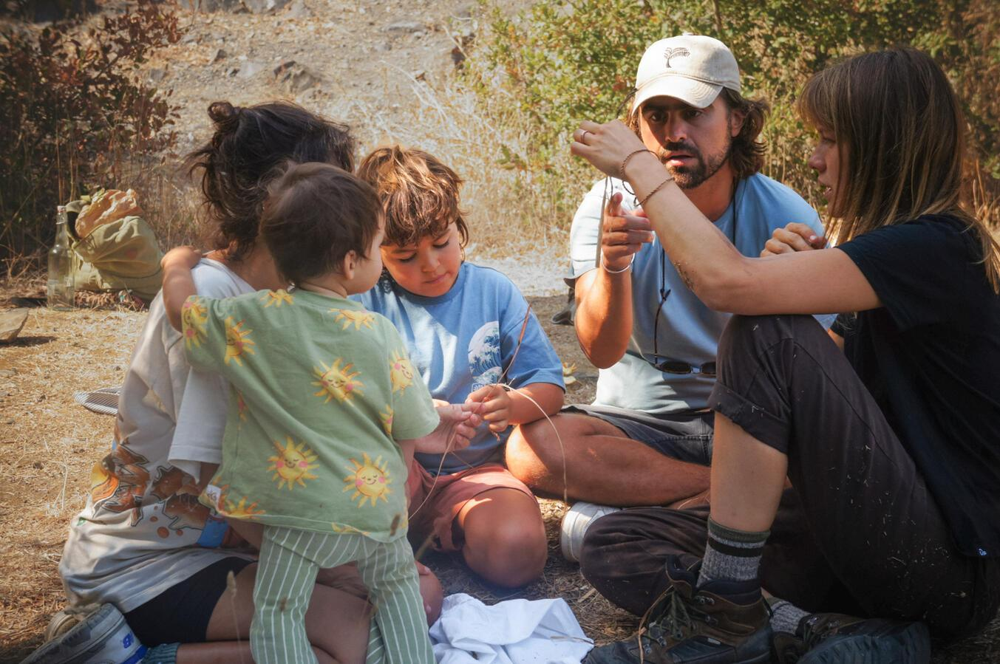
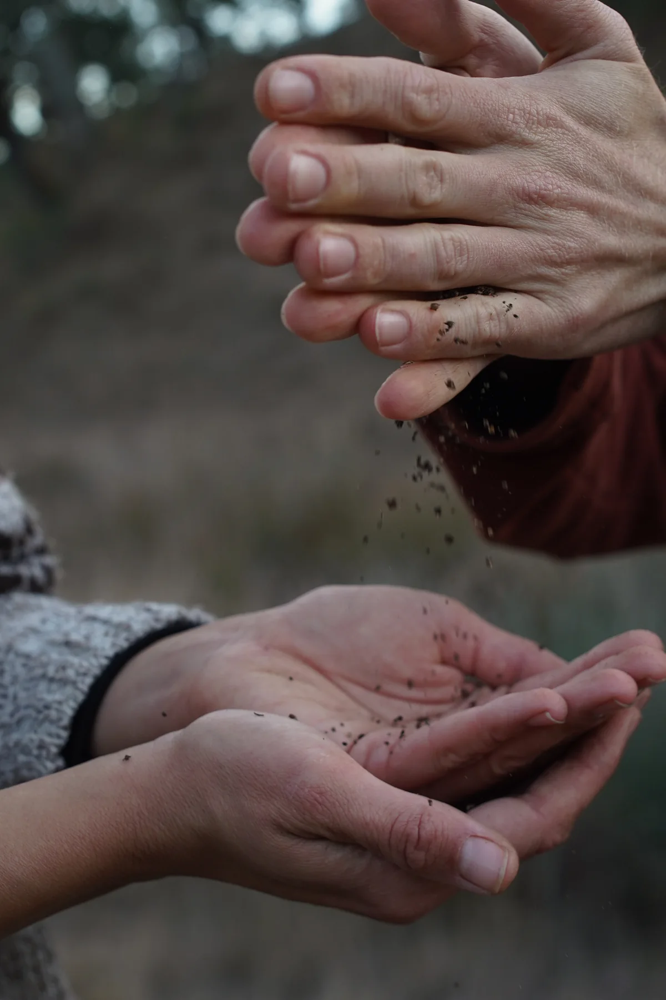
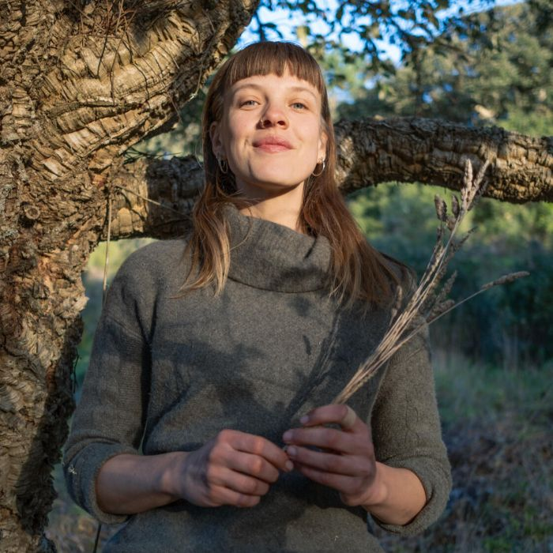
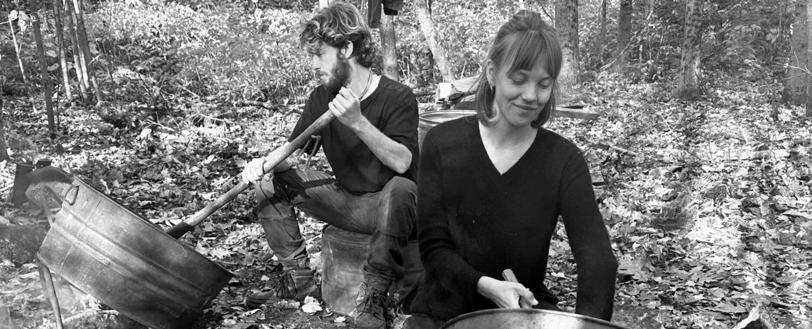
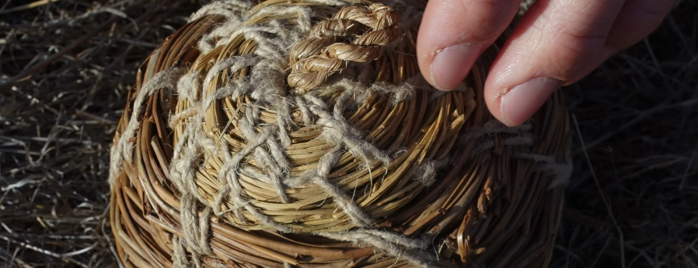

01 · SUN 29 NOV
Preparing for Winter: Wood, Fire and Acorns
How do you keep a fire alive when everything is wet?
- Make and tend a fire built for winter
- Read the cold in your body
- Harvest acorns and learn how they become food

hero photoSix winter Sundays on Sintra Mountain, 10:30 to 16:30, for all ages.
29 Nov•13 Dec•17 Jan•14 Feb•7 Mar•18 Apr

photoSix winter Sundays where children and adults learn wilderness skills side by side, as one group, on Sintra Mountain.
All ages · 10:30 to 16:30 · Colares · Up to 30 people
Each Sunday stands on its own and builds on the last. 10:30 to 16:30 on Sintra Mountain, Colares.
01 · SUN 29 NOV
How do you keep a fire alive when everything is wet?
02 · SUN 13 DEC
What can your hands make from what grows around you?
03 · SUN 17 JAN
What is the land telling you, if you know how to listen?

photo04 · SUN 14 FEB
If you had to spend the afternoon out here, could you stay warm and dry?
05 · SUN 7 MAR
What is the mountain offering as winter turns?
06 · SUN 18 APR
How quietly can you move through the forest?
*Open to Winter Arc members and anyone who joined 4 of the first 5 Sundays.
€300 €195 adult + child · the Winter Arc
Come to four and it already costs less than four single tickets. A saving of €105 (35%) when you come to all six.
On sale until Thursday 10 December, 9 PM.
€50 adult + child · €45 adult · €35 reduced (limited places)
Not ready to join all Sundays? Start with one. You can book any single Sunday from November to March.
Last winter, around 28 people joined each of the community Sundays.
"We absolutely loved the diversity of activities you offered, and your energy and enthusiasm made the experience truly special. Your ability to engage both children and adults was amazing."

photoWho it's for

photoPractical details
Joshua apprenticed for several seasons at Twin Eagles Wilderness School in Idaho and studied with Maine Primitive, learning the 8 Shields cultural mentoring model. He still returns to Twin Eagles each year to teach. He served as land steward for Traditional Dream Factory, an ecosystem regeneration project in the Alentejo, and has lived in Portugal for 7 years.

MelinaPractitioner and teacher of permaculture and regenerative farming, alongside crafting, cooking, and the art of wilderness awareness. She's cultivated her skills in communities and regenerative farms throughout Europe. Driven by a passion for nurturing both ecosystems and cultures, Melina has worked with youth and adults in pedagogical farms and nature camps. A guardian of cycles, she guides herself and others in aligning human lifestyle with the rhythms of the living world. She transforms curiosity into unforgettable learning experiences, and uses wild-foraged edible plants to create vitality-rich, nutritionally balanced and delicious meals. Her love for nature, crafting, and togetherness shapes her approach as a chef and nature connection guide.

photoWhat we share comes from mentors who shared it with us: Jon Young and the 8 Shields community, Mike Douglas of Maine Primitive, Tim Corcoran & Jeannine Tidwell of Twin Eagles Wilderness School and others.
The Winter Arc & eligibility
All six Sundays, 29 November to 18 April, in one booking, for less than the price of four single Sundays.
No. We encourage it, because the skills and the group build on each other. Your place on 18 April is held either way.
If you can come to 4 or more, yes. The Winter Arc costs less than 4 single Sundays. Come to all six and an adult + child saves €105. If you can only make 3 or fewer, single tickets cost less.
Yes. The first Sunday is open to everyone as a single day. It's the easiest way to meet us and the group.
Yes, until Thursday 10 December at 9 PM. We'll email you a personal code after the first Sunday, and the full price you paid for the 29th comes off the Winter Arc cost.
Camouflage and scouting build on everything that comes before. We keep this day for people who have practised with us through the winter, so we can go deeper together. It's not a drop-in day.
If you end up joining at least 4 of the first 5 Sundays, we'll email you an access code in March to book 18 April at the single price.
Booking & the day
Book by Thursday 9 PM before each Sunday. Late bookings are open until Saturday 6 PM, at €10 extra on every ticket that includes an adult, reduced tickets too. Additional children's tickets have no late fee.
Yes, for elders 65 and over and anyone who needs it: €35 for an adult, €40 for an adult with a child. Places are limited each Sunday, and there are two reduced Winter Arc places this winter. Book early if you need one.
Yes, a free one if 3 years or younger, so we can plan for everyone.
Yes, one for one: an adult place to another adult, a child place to another child. Just tell us their name. This works for single Sundays and the Winter Arc.
Bring a packed lunch and, if you like, something to share. On 7 March we cook over the fire and lunch is on us.
We go out anyway, dressed for it. Rain is part of learning to adapt to change, and a good day for tarp skills. We only cancel for severe weather, and we'll tell you by 6 PM on the Saturday before.
Everyone 17 and under comes with an adult. That adult can be a godparent, mentor or trusted friend.

photoQuestions about the Sundays, the Winter Arc or reduced places? Write to us and we'll reply soon.